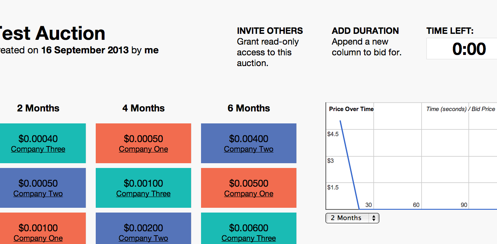

Chicago, IL — 1-773-491-1564
In most auctions, buyers bid the price up as they compete with each other to secure a known product or service. In reverse auctions, the roles are switched, as vendors bid down a price to sell to a single buyer or buying group. Reverse auctions are most effective in purchasing commodities in markets where price transparency is lacking. Electricity procurement is a perfect reverse auction application.
Technology has taken reverse auctions to a new level, providing additional value for consumers through the use of computers and the internet. Putting reverse auctions online allows suppliers from remote locations to effortlessly compete and secure business quickly. Sellers can continually assess their positions relative to their competitors, and cut margins where necessary to secure your business. Online reverse auctions not only reduce supplier margins further (thereby providing a lower price to consumers), but also reduce the size for economic transactions, bringing cost savings to more customers.
We didn’t invent reverse auctions, but we thought long and hard about what information each participant in an auction – suppliers, auctioneer and client – would need to make the best online reverse auction available. Then we involved some of the best and brightest minds to turn our vision into reality. After months of testing to ensure the quality of our product, we rolled out our auction.
Shown below is a screen shot of what you, the client, will see at the conclusion of an auction.
The creators of our online reverse auction platform have been working with customers for over 15 years in securing cost-effective energy for our clients’ facilities. We know that the auction is only one element in helping you reduce the energy expense line item in your budget. Our extensive experience issuing RFPs, evaluating responses, and analyzing contract terms and conditions adds to the value of our auction process, assuring that the most informed decisions are made.
Our recent experience on auctions we’ve conducted shows that the money saved by using an auction can completely offset the price premium for upgrading the entire purchase to green energy.
We also recognize that our clients may already have their own trusted procurement process in place and the online reverse auction is just one of many processes that can provide additional value. Because we’ve developed our own auction model and control our own platform, we can provide our clients with the specific services they need in their RFP process. We can provide the entire procurement process or we can assist by conducting only the auction process. When states deregulated the retail electric industry, they promoted the concept of choice. We like that and believe you do too. Carbonless Community: Providing you with choices you value.
Contact: Craig Schuttenberg (773) 491-1564 or craig@carbonlesscommunity.com
Carbonless Community provides
Call us at 1-773-491-1564 to find out more about our services.